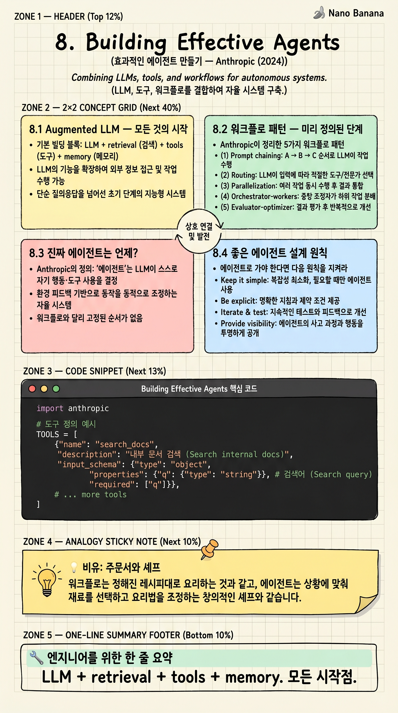

Building Effective Agents

🎯 학습 목표
- Augmented LLM이 모든 에이전트의 기본 블록임을 안다
- 5가지 워크플로 패턴(Chain·Routing·Parallel·Orchestrator·Eval)을 구분한다
- 워크플로와 자율 에이전트의 결정 기준을 안다
- 복잡도를 최소화하면서도 효과적인 시스템을 설계할 수 있다
- Anthropic이 권하는 '단순함부터'의 정신을 적용한다
Anthropic이 2024년 12월에 발표한 가이드. AI 에이전트 광풍 속에서 'agent'라는 용어가 너무 마케팅화돼 의미가 흐려진 시점에, Anthropic은 정의를 다잡고 실용적 패턴을 정리했다. 단순함을 강조한다 — Sutton의 Bitter Lesson과 McKinley의 Boring Tech 정신이 모두 녹아 있다.
이 글의 핵심 메시지: 에이전트를 만들기 전에, 그게 정말 에이전트여야 하는지 묻자. 대부분의 문제는 '워크플로' — 미리 정의된 단계 — 로 충분하다. 진짜 자율 에이전트(LLM이 도구·다음 단계를 스스로 결정)는 강력하지만 디버깅·예측 가능성·비용 면에서 비싸다.
핵심 내용
8.1 Augmented LLM — 모든 것의 시작
기본 빌딩 블록: LLM + retrieval + tools + memory. 이 네 가지를 갖춘 단일 LLM 호출이 거의 모든 에이전트 시스템의 원자 단위다.
- Retrieval: 외부 지식을 끌어다 context에 넣음. - Tools: LLM이 외부 함수를 호출 가능 (API, DB, 코드 실행). - Memory: 이전 turn·세션의 정보 유지.
중요한 인사이트: 많은 'AI 시스템'이 이 단일 augmented LLM 호출 하나로 충분하다. 워크플로나 에이전트로 가기 전에, 단일 호출로 해결되는지 먼저 확인하라.
8.2 워크플로 패턴 — 미리 정의된 단계
Anthropic이 정리한 5가지 워크플로 패턴:
(1) Prompt chaining: A → B → C 순서로 LLM 호출. 각 단계 출력이 다음 입력. 예: 마케팅 카피 작성 → 번역 → 톤 검증.
(2) Routing: 분류 LLM이 입력을 적절한 전문 LLM/도구로 라우팅. 예: 고객 문의를 환불·기술·일반으로 분기.
(3) Parallelization: 같은 입력을 여러 LLM에 병렬 호출하고 집계. (a) Sectioning — 하위 작업 분할 (b) Voting — 같은 작업 N번 → 합의.
(4) Orchestrator-workers: 메인 LLM이 동적으로 하위 작업을 만들고 worker LLM에게 위임 후 종합. 사전 정의된 단계가 없을 때.
(5) Evaluator-optimizer: 한 LLM이 출력을 만들고, 다른 LLM이 평가·피드백을 주면, 첫 LLM이 다시 시도. 반복 개선.
이 5개 패턴은 워크플로 — '단계가 미리 정의됐다'. 디버그·예측 쉽고 비용 추정 가능.
8.3 진짜 에이전트는 언제?
Anthropic의 정의: '에이전트'는 LLM이 스스로 자기 행동·도구 사용을 결정하고 환경 피드백 기반으로 동작을 조정하는 시스템.
워크플로와 차이: 워크플로는 다음 단계가 코드에 정의돼 있다. 에이전트는 다음 단계가 LLM의 추론으로 결정된다.
에이전트가 적합한 경우: (a) 작업 단계가 미리 정의 불가 (b) 환경이 동적 (c) 여러 시도와 적응이 필요. 예: 컴퓨터 사용 에이전트, 코드 디버깅 에이전트, 연구 에이전트.
에이전트의 비용: (a) 비결정적 — 같은 입력에 다른 출력 (b) 무한 루프 위험 (c) 비용·지연 폭발 가능 (d) 디버깅 어려움.
Anthropic의 권고: 가능한 한 워크플로로 풀어라. 워크플로로 안 되는 영역에서만 에이전트로.
8.4 좋은 에이전트 설계 원칙
에이전트로 가야 한다면 다음 원칙을 지켜라.
Simplicity: 가능한 가장 단순한 디자인부터. 복잡한 프레임워크가 아닌 직접 작성한 루프부터.
Transparency: 에이전트의 추론과 도구 호출이 로그·trace로 보여야 한다. 'why did it do that?'에 답할 수 있게.
Sufficient context: 에이전트가 결정에 필요한 정보를 충분히 받아야 한다. context engineering — 어떤 정보를 어느 시점에 줄지가 핵심.
Test in sandbox: 프로덕션 전에 격리된 환경에서 충분히 테스트. 무한 루프·예상 못한 도구 호출 패턴이 흔하다.
Stopping criteria: 명확한 종료 조건. max_steps, time_budget, confidence threshold. 무한 루프 방지의 마지막 보루.
Human-in-the-loop for high-stakes: 비가역 행동(돈 송금, 파일 삭제, 외부 통신) 전엔 사람 승인.
8.5 프레임워크보다 직접 작성
Anthropic의 강한 권고: LangChain·LangGraph·AutoGen 같은 거대 프레임워크 쓰지 마라. 적어도 처음엔.
이유: (a) 프레임워크는 추상화 비용이 크다. 디버깅 시 그 추상화를 통과해야 한다. (b) 프레임워크의 breaking change에 끌려다닌다. (c) 자기 시스템의 동작을 깊이 이해할 기회를 박탈한다.
권고 워크플로: (1) Anthropic SDK + 단순 while 루프로 직접 작성. (2) 시스템이 무엇이 필요한지 정확히 파악. (3) 그 후 필요하면 프레임워크 도입.
McKinley의 'Choose Boring Technology'(5장)와 같은 정신: 새 프레임워크는 토큰을 소비한다. 진짜 차별화 영역이 아니면 직접 짜는 게 낫다.
이 글이 'workflow first, agent later'와 'framework last'를 동시에 권하는 이유: 둘 다 '단순함이 자산'이라는 같은 원칙에서 나온다.
💡 비유로 이해하기
체인 레스토랑은 메뉴와 조리법이 정해져 있다 — 워크플로. 주문이 들어오면 정해진 단계로 요리한다. 빠르고 일관되고 비용 예측 가능.
오마카세 스시집의 셰프는 다르다 — 에이전트. 손님 반응, 그날 입고된 재료, 분위기를 보고 다음 코스를 즉석에서 결정한다. 강력하지만 일관성이 떨어지고 비싸다.
맥도날드를 오마카세 셰프로 운영할 이유 없다. 핵심 차별화가 셰프의 판단력에 있는 영역에서만 에이전트로. 그 외엔 워크플로로. Anthropic의 글은 이 결정을 명확히 하라고 한다. 모든 곳을 셰프로 만들면 빠르게 망한다.
💻 코드 예시
에이전트의 가장 기본 형태 — Anthropic이 권하는 '직접 짠 작은 루프'. 프레임워크 없이 100줄 미만으로 동작하는 도구 사용 에이전트.
import anthropic
TOOLS = [
{"name": "search_docs",
"description": "내부 문서 검색",
"input_schema": {"type": "object",
"properties": {"q": {"type": "string"}},
"required": ["q"]}},
{"name": "submit_answer",
"description": "최종 답변 제출",
"input_schema": {"type": "object",
"properties": {"answer": {"type": "string"}},
"required": ["answer"]}},
]
def run_tool(name, args):
if name == "search_docs":
return search_internal(args["q"]) # 자체 검색 함수
if name == "submit_answer":
return {"final": args["answer"]}
def run_agent(user_question: str, max_steps: int = 10) -> str:
client = anthropic.Anthropic()
messages = [{"role": "user", "content": user_question}]
for step in range(max_steps): # ← stopping criteria
resp = client.messages.create(
model="claude-opus-4-7",
max_tokens=1024,
tools=TOOLS,
messages=messages,
)
# 도구 호출 없으면 종료
tool_uses = [b for b in resp.content if b.type == "tool_use"]
if not tool_uses:
return "".join(b.text for b in resp.content if b.type == "text")
messages.append({"role": "assistant", "content": resp.content})
# 각 도구 실행 후 결과 반영
results = []
for t in tool_uses:
result = run_tool(t.name, t.input)
if t.name == "submit_answer":
return result["final"] # ← 명시적 종료
results.append({"type": "tool_result",
"tool_use_id": t.id,
"content": str(result)})
messages.append({"role": "user", "content": results})
raise TimeoutError("max_steps reached") # ← 안전망
프레임워크 없이 50줄 안에 정상 동작하는 도구 사용 에이전트가 만들어진다. while 루프, max_steps, 명시적 종료 도구, 도구 결과를 messages에 누적. Anthropic이 강조한 모든 원칙(simplicity, stopping criteria, transparency)이 이 작은 코드에 들어 있다. 더 복잡한 에이전트도 이 핵심 패턴 위에 얹는다 — 프레임워크가 필요해지는 건 그다음이다.
🏭 현업에서의 평가
✅ 시니어가 보는 것
- 워크플로/에이전트 결정 기준이 명확
- 5가지 워크플로 패턴을 식별하고 적재적소에 사용
- 에이전트에 stopping criteria와 human-in-the-loop를 설계
- 프레임워크 의존도를 의식적으로 통제
⚠️ 레드 플래그
- 모든 문제를 'agent' 하나로 풀려는 마케팅적 사고
- LangChain·LangGraph 같은 프레임워크가 '필수'라는 인식
- 에이전트에 max_steps·timeout·비용 상한이 없음
- 비가역 도구 호출에 human approval이 없음
🎤 예상 인터뷰 질문
- 당신 시스템의 어느 부분이 워크플로이고 어느 부분이 에이전트인가요? 분기 기준은?
- 에이전트가 무한 루프에 빠지지 않도록 어떻게 설계하시나요?
- Anthropic이 '프레임워크 쓰지 말라'고 권하는 이유에 동의하시나요? 반론은?
✨ 핵심 요약
Augmented LLM이 원자
LLM + retrieval + tools + memory. 모든 시작점.
워크플로 vs 에이전트
단계가 정의됐나(워크플로) 아니면 LLM이 결정하나(에이전트).
5가지 워크플로 패턴
Chain·Routing·Parallel·Orchestrator·Evaluator.
대부분은 워크플로로 충분
에이전트는 마지막 수단.
단순함부터
프레임워크 없이 직접 짠 루프부터.
Stopping criteria 필수
max_steps·timeout·비용 상한. 안전망.
Transparency
왜 그렇게 행동했는지 trace로 답할 수 있어야.
Context engineering
어떤 정보를 어느 시점에 줄지가 에이전트 품질을 결정.